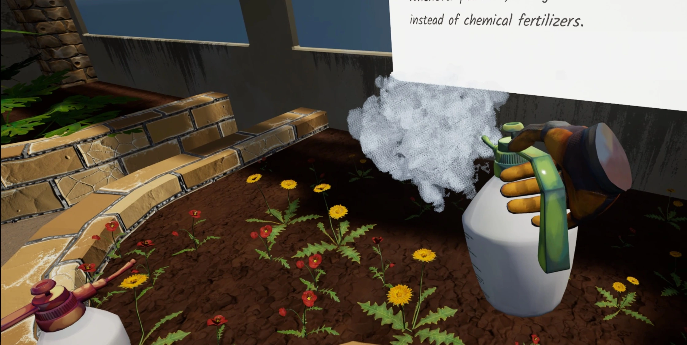
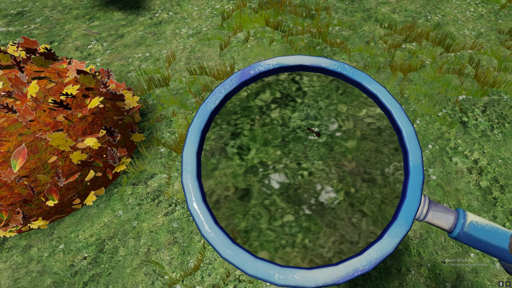
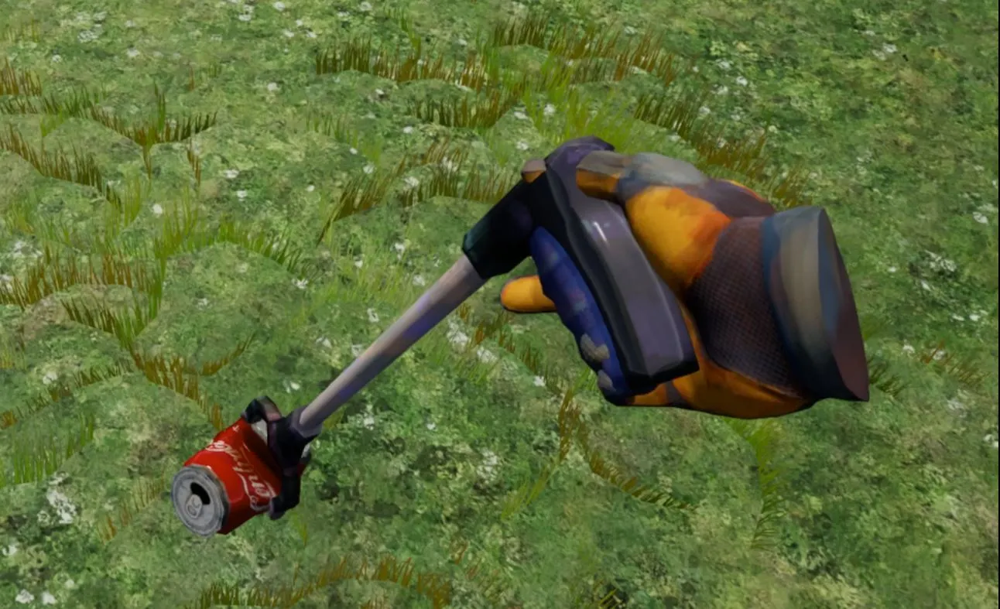
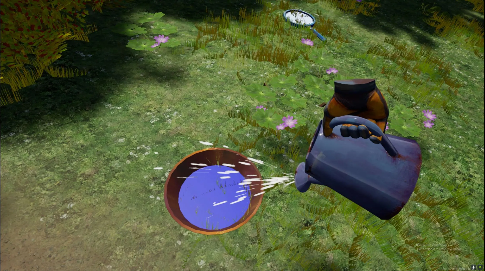
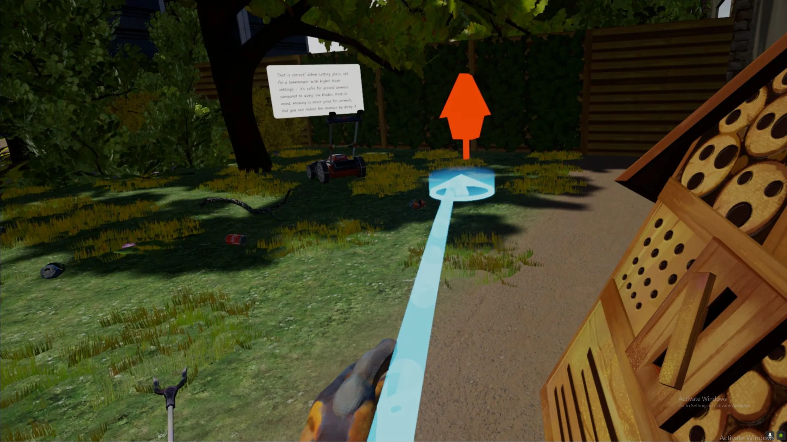
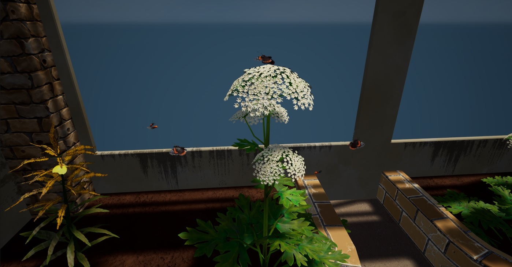

This is a project made in collaboration with the Natura Docet museum in Denekamp and Saxion Green office.
The goal of the project is to create awareness for the small creatures living in a city environment like ants,
bees and worms. The project is a Virtual Reality game in which the user is tasked with managing the environment.
Based on what choices the players makes, more or less different creatures will be present in the environment.
Link to my blog on this project can be found
here!
Game trailer
Demo video

Fertilizer spray bottle
Plants gradually grown when sprayed!
Controlled with VR controller triggers.
Visual effects!
Uses a trajectory for collision.

Magnifying Glass
True zoom in VR to look at the small creatures!

Trash Grabber
Used to pick up trash.
Contorller with VR controller grab and triggers.

Watering Can
Uses VR controller tilt to determine flow rate.
Flow rate determines VFX intensity.

Insect Hotel
Uses a modified version of my personally developed Item Slot Plugin.
Now with clear highlights (red in the picture) as soon as the user hold an objects.

Navigating NPC's!
A great amount of different creatures roam around the level!
Walking animals.
Flying animals.
This project is a property developed for Saxion and Natura Docet.
BioVRCity uses Unreal® Engine. Unreal® is a trademark or registered trademark of Epic Games, Inc. in the United States of America and elsewhere.
BioVRCity uses The MIT-licensed and open-source plugin VR Expansion Plugin